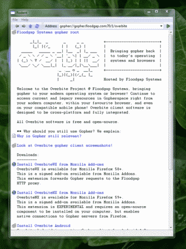

A modern, native, and GUI-based, Gopher client for new and old computers. Bringing you the joys of glorious plain text along icons, a modern user interface, and full integration with your operating systems other applications.
The idea for this client came about during the 2024 edition of The Old Computer Challenge when was looking for a native client to browse gopherspace, since OverbiteFF was feeling a bit too slow on my Power Mac G5, and was shocked to know that there were no newer graphical clients available, so I decided I should make one. You can follow some of this project's history via a series of posts I made during OCC documenting a bit of the process.
Warning: Due to a busy life and other projects getting on the way, this hasn't been finished, although on Windows it's basically finished, it's just missing a lot of polishing.
|
 Application showing Floodgap's Overbite menu
|
The main target of this application is Windows, although some efforts have been made to port it to UNIX variants, but have since stalled.
For the Windows port the application, it's designed to be compatible with Windows 95 all the way to the latest AI garbage from Microsoft, which is currently Windows 11. It comes with a project for Visual Studio 6 (requires the Windows Server 2003 PSDK) and a solution for Visual Studio 2010.